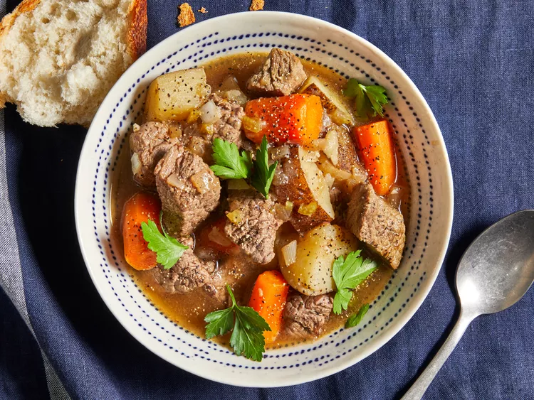

Slow cooker Beef Stew

Description
This slow cooker beef stew is the perfect low maintenance meal for chilly fall and winter nights.
Full of cozy flavor and hearty ingredients, this beef stew recipe will warm you up from the inside out.
Ingredients
- Stew meat: This recipe starts with two pounds of beef stew meat, cut into 1-inch pieces.
- Flour: All-purpose flour thickens the broth, ensuring a hearty stew.
- Seasonings: This beef stew is seasoned with salt, pepper, Worcestershire sauce, paprika, garlic, and a bay leaf.
- Broth: Use store-bought or homemade beef broth.
- Vegetables: You'll need carrots, potatoes, onions, and celery.
Steps
- Combine ingredients: Place the beef in the slow cooker, then toss with flour, salt, and pepper.
Add the broth, vegetables, Worcestershire sauce, paprika, garlic, and bay leaf. Stir to combine.
- Set slow cooker: Cover the Crock-Pot and cook on Low for 8 to 12 hours or on High for 4 to 6 hours.